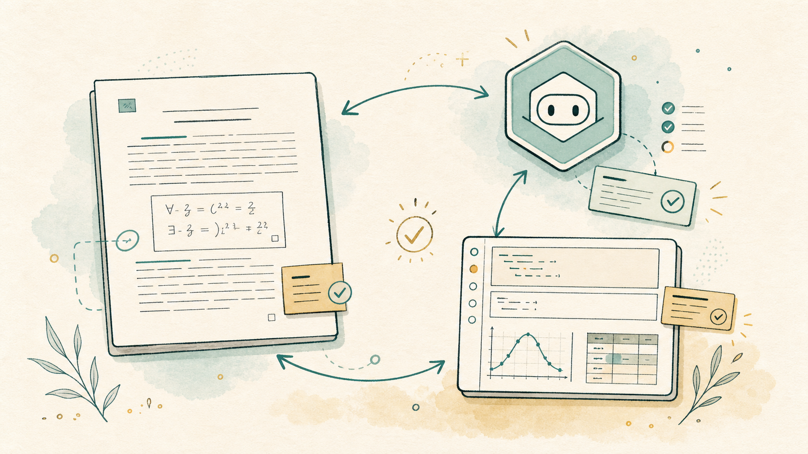
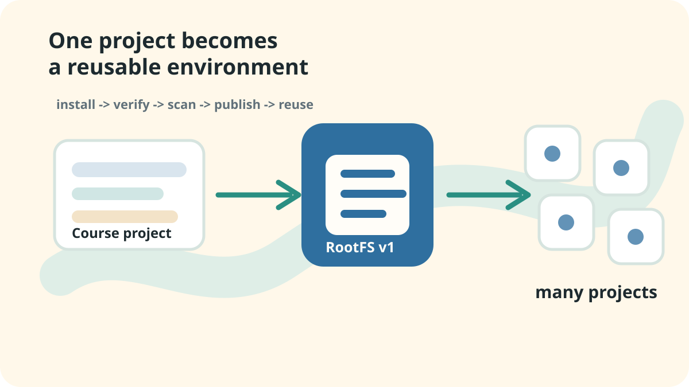
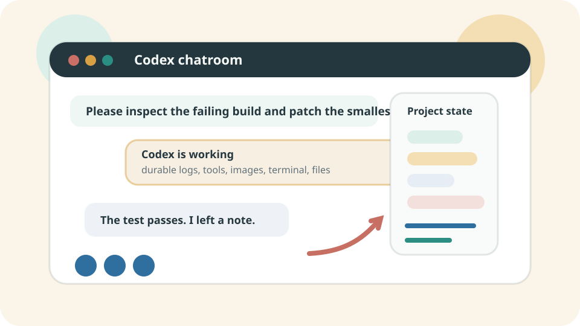

Short illustrated guides
CoCalc Guides
Narrative guides for using CoCalc-AI in real research, teaching, and software work, where files, notebooks, terminals, chat, and agent threads are collaborative by default.

Polish a LaTeX draft with Codex, Jupyter, collaborators, and project history in one workspace.
Read the guide
Use the terminal, Codex, apt, language packages, snapshots, and shared terminal history to make a project environment work.
Read the guide
Install gh, authenticate, and let Codex help with
issues, pull requests, releases, and reviews.

Let Codex manage logs, retries, partial outputs, summaries, and recovery for messy computations.
Read the guide
Publish exact software stacks for courses, teams, sites, and public library demos with versions, scans, and rollback.
Read the guide
Use durable, collaborative Codex threads with rich prompts, images, automations, search, and project-native tools.
Read the guide